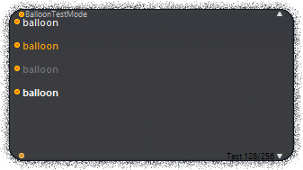
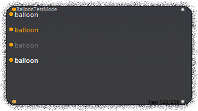

Fading Like A Dream
Fading Like A Dream is a balloon made for the Ghost Masquerade 5 entry, I Often Dream Of Marigolds. It is styled with a black text area and a fuzzy border.


Fading Like A Dream is a balloon made for the Ghost Masquerade 5 entry, I Often Dream Of Marigolds. It is styled with a black text area and a fuzzy border.
